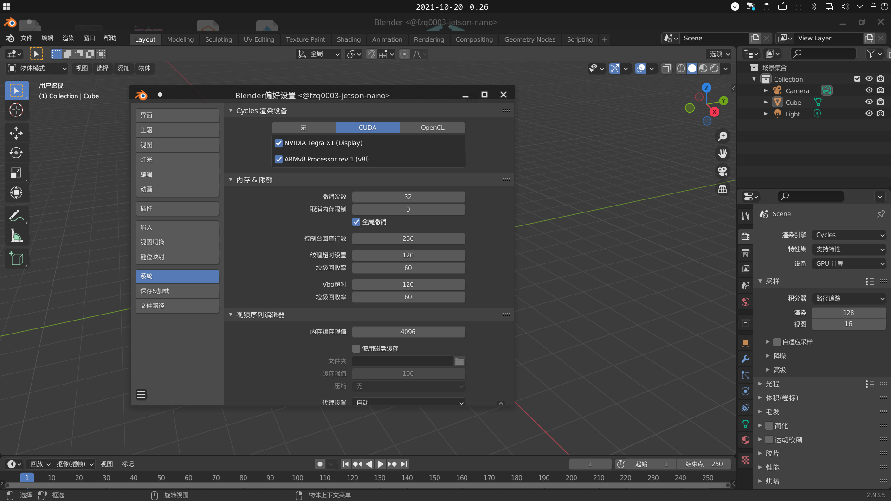

在AArch64/ARM64架构平台编译Blender
该文章已过时，请等待更新。
白嫖了一台Jetson Nano，想试试这玩意儿的运算能力，正好也在玩Blender，所以就想在板子上跑跑。
然而，官方镜像所用Ubuntu 18.04只有2.79b。
我都已经用2.93了啊喂！
于是，故事开始了……
很可怕吗，是的很可怕……
程序下载
如果你不想编译，请下载这个文件然后跌跌撞撞奔向评论区(?)：
食用方法：
- 将压缩包内
blender-aarch64-2.93.5文件夹解压到你想要的位置。 - 内含
config和cycles kernel cache，可解压到$HOME目录。
当前系统环境
- 开发板：Jetson Nano 2GB。
- CPU架构：ARMv8 (AArch64)。
- 搭载系统：Ubuntu 18.04.6 LTS。
- CUDA：10.2
编译前准备工作
来看下Blender对编译器的要求[1]：
| 编译器 | 官方使用版本 | 最低支持版本 |
|---|---|---|
| Linux GCC | 9.3.1 | 9.3 |
| Linux Clang | - | 8.0 |
| macOS Xcode | 11.5 | 10.0 |
| Windows Visual Studio | 2019 | 2017 |
除此以外，Blender的某些依赖需要根据情况修改编译配置，以及更高版本的编译工具。在此直接列个表好了：
| 依赖 | 问题 / 额外要求 |
|---|---|
| OpenSSL | -m64参数不可用 |
| TBB | -mrtm参数不可用；未更新代码 |
| OpenEXR | CMake >= 3.12[2] |
| Embree | 能够访问GitHub的强力网络 |
| SQLite | 合并最新config.guess |
| GMP | --enable-fat参数与--disable-assembly参数冲突[3] |
| OpenAL | 需要libpulse-dev |
| Theora | 合并最新config.guess |
| Mesa | Meson >= 0.52.0[4] |
| OIDN | 不支持Linux ARM[5] |
| ISPC | OIDN的依赖项 |
| 某些其他依赖 | 没有对AArch64的判断 |
太难受了，好在我在developer.blender.org找到了一个针对aarch64的commit[6]，就在此基础上修改好啦。
另外，如果需要添加CUDA支持，需要正确配置合适版本的GCC[7]。
| CUDA 版本 | GCC 最高支持版本 |
|---|---|
| 11.1, 11.2, 11.3 | 10 |
| 11 | 9 |
| 10.1, 10.2 | 8 |
| 9.2, 10.0 | 7 |
| 9.0, 9.1 | 6 |
| 8 | 5.3 |
| 7 | 4.9 |
| 5.5, 6 | 4.8 |
| 4.2, 5 | 4.6 |
| 4.1 | 4.5 |
| 4.0 | 4.4 |
哦对了，因为众所周知的原因，可能需要非常手段来解决下载速度慢的问题。
可能额外需要32G左右的空间。
检查并安装新版编译工具
不需要安装Clang，在编译依赖的时候会自动编译Clang。
另外，由于我的开发板支持CUDA，所以我会一并配置CUDA相关选项，还请不要无脑复制。
检查编译工具版本：
1 | |
新建文件夹用于存放源码：
1 | |
安装CMake：
1 | |
编译/安装GCC[8]：
1 | |
1 | |
安装Meson：
1 | |
配置环境（这里写成了一个shell，便于以后调用）：
1 | |
替换默认GCC：
1 | |
最后再检查一次版本：
1 | |
为CUDA设置GCC（可选）：
1 | |
下载依赖（可选）
可以下载已经编译好的库，也可以下载源码包自己编译。
当然，你也可以通过在Blender源码目录内运行make deps来下载并编译依赖，但是下载过程太难受了。
下载编译好的库（强烈推荐）：
搭了个小服务器，如果网站挂了，请联系我。
1 | |
从官方下载依赖源码：
1 | |
由于接下来会修改依赖，所以要下载额外的依赖源码。
下载额外依赖源码：
1 | |
下载Blender源码
这里用的是2.93.5的源码：
1 | |
修改源码
下载补丁文件：
1 | |
将补丁应用于源码：
1 | |
编译依赖（可选）
如果已经下载了编译好的库，请跳过这一步。
使用apt下载依赖中的依赖：
1 | |
我忘了是否需要libncurses5-dev了，以后测试完补上。
1 | |
编译：
1 | |
需要等很长很长时间（我的开发板用了一天左右），而且容易出现奇奇怪怪的错误。
编译Blender
这里使用CMake中的CCMake工具编译：
1 | |
按c进行第一次配置，然后会多出来一堆选项，根据英文描述和实际需要修改即可。以下选项仅供参考：
| 选项 | 个人修改值 |
|---|---|
| CYCLES_TEST_DEVICES | CUDA |
| WITH_CYCLES_CUDA_BINARIES | ON |
| WITH_OPENIMAGEDENOISE | OFF |
| CUDA_HOST_COMPILER | /usr/bin/gcc-7 |
| CUDA_SDK_ROOT_DIR | /usr/local/cuda-10.2/samples/common |
如果没看到相关选项，请重新按c配置一遍或按t切换到高级选项；每次修改选项后需要再次配置，确认无误后可以按g生成Makefile。
有些选项我忘了，以后补上。
最后编译即可。注意：如果内存不大，最好不要使用-j参数！
1 | |
编译完成后，可在./bin目录找到文件。
后期打包与测试
只需要将./bin目录里的所有文件打包分发即可。
实机测试：

如果使用SSH X11转发，请使用
-Y参数。
结语
很不容易，断断续续整了差不多半个月，而且其中还要应付考试……
人麻了，就这样。
如果之后出现问题再补吧。
参考
- https://wiki.blender.org/wiki/Building_Blender#Compiler_Versions ↩
- https://github.com/AcademySoftwareFoundation/openexr/blob/master/INSTALL.md ↩
- https://gmplib.org/manual/Build-Options ↩
- https://docs.mesa3d.org/meson.html ↩
- https://github.com/OpenImageDenoise/oidn/issues/125 ↩
- https://developer.blender.org/D10958 ↩
- https://stackoverflow.com/questions/6622454/cuda-incompatible-with-my-gcc-version ↩
- https://www.cnblogs.com/windtail/p/8317285.html ↩